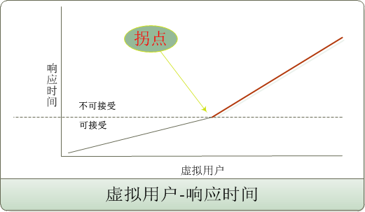
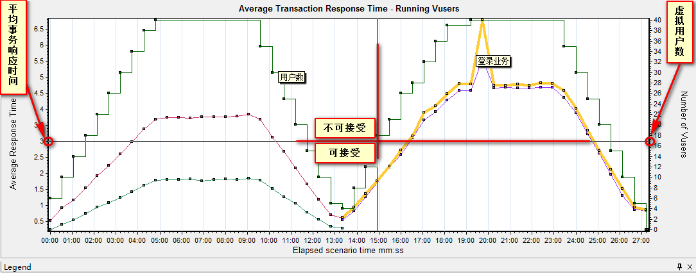
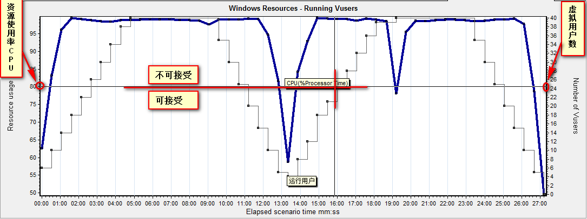

拐点分析法
目标
了解拐点分析法
一、什么是拐点分析法？

拐点分析是一种利用性能计数器曲线图上的拐点进行性能分析的方法。
1.1 拐点分析 基本思想
性能瓶颈主要产生原因就是某个资源的使用达到了极限，此时表现为随着压力的增大，系统性能却出现极具下降，这时产生了拐点现象；
思路：只要得到拐点附近的资源使用情况，就能定位出系统性能瓶颈所在；
1.2 订票系统 示例：
1.需求：
1. 注册和登录业务40虚拟用户混合场景(先执行40用户注册业务，然后使用40新注册用户去登录)
2. 场景策略-15秒启动2个用户，达到40用户时，持续5分钟，虚拟用户退出以每10秒退出5个策略
3. 登录业务40用户登录时<=3秒，CPU占有率不得超过80%
2. 运行用户与平均事务响应时间：

应用系统随着虚拟用户的增加，事务响应时间缓缓增加，当虚拟用户数达到17个时，事务响应时间超过预期3s持续增加，此时就说明了系统承载不了如此多用户访问这个事务，也就是存在瓶颈。
注意：上图为虚拟运行用户图和平均事务响应时间合并图
3. 运行用户与资源占用率 CPU：

从上图得知，CPU不超过80%，目前配置最多支持25个用户。